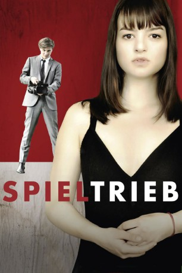

#10774 Spieltrieb
 
 IMDB-Wertung: 5.2 / 10
IMDB-Wertung: 5.2 / 10  Metascore: 0
Metascore: 0 
Die hochbegabte Ada ist Einzelgängerin an ihrer Schule. Als der unnahbare, fast dämonisch wirkende Alev der Klasse als neuer Mitschüler vorgestellt wird, ist Ada von seiner selbstbewussten und kühlen Art fasziniert. Sie fühlt sich auch körperlich stark von ihm angezogen, obwohl dieser angibt, keine Liebesbeziehung eingehen zu können. Die beiden kommen sich näher und bald schildert Alev ihr seine Theorie vom Spieltrieb, die besagt, dass alle Handlungen des Menschen Spielhandlungen sind. Sein Ziel ist es, die Menschen wie Spielfiguren zu steuern und zu manipulieren. Bald reift in Alev ein Plan für ein perfides Spiel, das außer Kontrolle gerät....
Jahr: 2013
Dauer: 100 Minuten
FSK: 12
Land: Deutschland Studio: Concorde FilmverleihTonspuren:
Untertitel:
Auflösung: 1080p (1920x816) Größe: 5038 MB
Genre: Drama
Regisseur: Gregor Schnitzler
Drehbuch: Kathrin Richter, Jürgen Schlagenhof, Juli Zeh
Soundtrack: Gerd Baumann
Darsteller:
- Michelle Barthel als Ada Fischer
 Jannik Schümann als Alev El Quamar
Jannik Schümann als Alev El Quamar Maximilian Brückner als Szymon Smutek
Maximilian Brückner als Szymon Smutek- Sophie von Kessel als Magdalena Smutek
 Isolde Barth als Richterin
Isolde Barth als Richterin- Elisa Schlott als Odetta
- Muriel Wimmer als Prinzessin Joe
 Götz Schubert als Heinrich (uncredited)
Götz Schubert als Heinrich (uncredited)- Lisa Wagner als (uncredited)
- Ulrike Folkerts als Patrizia Fischer
 Richy Müller als Höfi
Richy Müller als Höfi- Helmut Berger als Dr. Teuter
- David Schütter als Grüttel
- Robert Alexander Baer als Toni
- Patrick Hoffmann als Schüler
- Tobias Priesack als Schüler
- Phillip Kramer als Schüler
- Livia Steenken als Schüler
- Wolf Scabo als Schüler
- Daniela Schürger als Barfrau
- Walter Schuster als Verteidiger Smutek
- Attilio Reale als Vater (uncredited)
Datei: X:\2013(N-Z)\Spieltrieb (2013, FSK12, 1920x816).mkv seit 22.02.2019
Festplatte: HD 2013(I-Z)-2014(A-Z)
 Es gibt insgesamt 133 Filme in der Gruppe '2013(N-Z)'
Es gibt insgesamt 133 Filme in der Gruppe '2013(N-Z)'